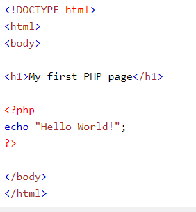
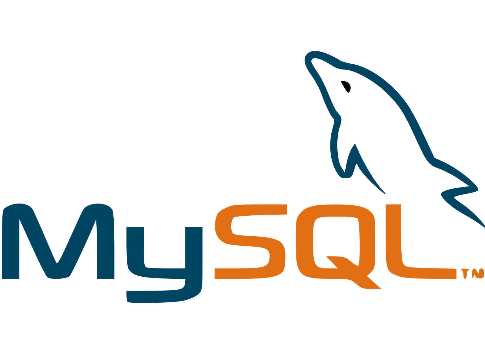

Masked Ball Web Organizer
- Rosca Andreea-Maria
Cuprins:
1.Descriere
Se doreste realizarea unei aplicatii web care sa gestioneze organizarea de evenimente de divertisment de tipul balurilor mascate pe diferite tematici.
Aplicatia permite utilizatorilor crearea de evenimente, updatarea unui eveniment si adaugarea de feedback.
Crearea unui eveniment se poate face doar in interfata aplicatiei. Pe baza feedback-ului primit,aplicatia va realiza statistici.Acestea presupun cuantificarea raspunsurilor fie prin verificarea tipului de intrebare din feedback fie ultilizand mecanisme corespunzatoare care extrag semnificatia datelor din raspuns.
Datele salavate vor fi disponibile sub format csv si json iar noutatile despre viitoare evenimente in fluxuri RSS(link).
2.Actori/Interese
Creator Site: pune la dispozitia utilizatorilor o platforma specializata in organizarea de evenimente si expediere de invitatii prin e-mail la aceste evenimente.
Utilizatorii : dispun de o cantitate de informatii si au dreptul de a crea un eveniment,de a face update la un eveniment sau de a trimite invitatii.
Publicul : primeste invitatii prin e-mail la un anumit eveniment si poate vizualiza statisticile create pe baza unui eveniment trecut.
3.Scenarii de utilizare
3.1.Utilizatorul isi creaza un cont
3.1.1.Obiectiv/Context
Utilizatorul obtine un cont prin care poate accesa functionalitatile platformei .
3.1.2.Pasi/Scenariu
Utilizatorul apasa butonul "register" aflat in bara de navigare a aplicatiei web.Odata cu aceasta actiune,i se deschide o noua pagina unde are de completat un formular.El isi introduce numele,o parola care respecta standardele de securitate si un e-mail valid.Apasa butonul "Register" din partea inferioara a formularului.Daca datele nu sunt acceptate de sistem,acesta introduce date.
3.1.3.Extensii
Utilizatorul isi creaiaza cont folosind date de pe alte platforme la care are deja cont(google,facebook,twitter).
3.2.Utilizatorul se logheaza
3.2.1.Obiectiv/Context
User-ul va putea sa realizeze actiunile dorite puse la dispozitie de catre aplicatie.
3.2.2.Pasi/Scenariu
Dupa inregistrare,user-ul apasa butonul "Login" din bara de navigare.Acesta il trimite la o noua pagina unde va introduce email-ul,parola din inregistrare si apasa butonul "login".
3.2.3.Extensii
Daca email-ul/parola sunt introduse gresit,in interfata apare o eroare(email/parola invalide) si acestea vor fi introduse dinou,de data aceasta corect.
Utilizatorul isi uita parola , datorita lipsei unui sistem de recuperare a parolei acesta trebuie sa contacteze administatorii sitului.
3.3.Utilizatoul creaza un event
3.3.1.Obiectiv/Context
Publicarea unui nou eveniment.
3.3.2.Pasi/Scenariu
Utilizatorul (dupa logare) apasa pe butonul "EventManager" din bara de navigare.Acesta il trimite la o noua pagina unde apar toate event-urile. Sub event-urile deja existente exista un buton "Create New Event". Userul apasa acel buton,il trimite la o noua pagina unde exista un formular pentru crearea unui nou eveniment.Userul completeaza formularul cu event-ul pe care doreste sa il publice. Userul apasa butonul "Create event" din partea inferioara formularului.Eventul s-a creat.
3.3.3.Extensii
Daca nu s-a completat vreun camp din acel formular, evenimentul nu se va crea.
3.4.Utilizatorul updateaza un event
3.4.1.Obiectiv/Context
Adaugarea unor schimbari organizatorice aparute dupa crearea event-ului.
3.4.2.Pasi/Scenariu
Utilizatorul va alege sa apese butonul "edit event" din dreptul oricarui eveniment deja creat. Acesta va trimite la formularul event-ului respcetiv si acolo userul va modifica campul pe care doreste sa il schimbe(data,tema,locatie etc).User-ul apasa butonul "create event" de sub formular,de aceasta data facand doar update nu creare in sine de event.
3.4.3.Extensii
Daca event-ul a fost deja,acesta nu va mai fi modificat pentru ca e redundant.
3.5.Utilizatorul creaiaza feedback
3.5.1.Obiectiv/Context
Colectarea de impresii de la un anumit eveniment care vor ajuta la crearea de statistici.
3.5.2.Pasi/Scenariu
Utilizatorul va alege sa apese butonul "add feedback" din dreptul oricarui eveniment deja creat. Acesta va trimite la un formular care permite sa adaugi noi intrebari completand cu tipul intrebarii si intrebarea respectiva ,acest lucru putand fi realizat doar de cel care a creat event-ul.Ceilalti useri vor apasa butonul "finalizeFeedbackForm" aflat pe aceiasi pagina,care va trimite la formularul de feebcak efectiv.Userii il completeaza apoi apasa butonul "submit".
3.5.3.Extensii
Daca un alt user care nu a creat event-ul incearca sa introduca noi intrebari pentru feedback, interfata va afisa un mesaj de eroare("permission denied").
3.6.Utilizatorul trimite invitatii
3.6.1.Obiectiv/Context
Publicul va primii invitatii personalizate la un anumit eveniment la care ei pot sa participe sau sa refuze.
3.5.2.Pasi/Scenariu
Utilizatorul va alege sa apese butonul "create invite" din dreptul oricarui eveniment deja creat.Acesta trimite la pagina cu formularul pentru trimiterea invitatiei.User-ul(creatorul event-ului) completeaza formularul(numele creatorului,numele invitatului,email-ul invitatului si un mesaj personalizat) si apasa butonul "submit" de sub formular.
3.5.3.Extensii
Daca nu se completeaza toate campurile din formular,invitatia nu va fi trimisa.
3.7.Genereaza statistici
3.7.1.Obiectiv/Context
Centralizarea rezultatelor de la feedback-ul primit din partea utilizatorilor din aplicatie.
3.5.2.Pasi/Scenariu
Utilizatorul va scrie un feedback si va apasa butonul submit. Rezultatele de la feedback vor fi cuantificate fie prin evaluarea individuala a intrebarilor,fie folosind unui mecanism ajutator care va extrage semnificatia raspunsurilor iar pe baza acestora se vor genera statistici realizate cu ajutorul unui API.
3.5.3.Extensii
Daca nu exista feedback sau exista dar nu poate fi analizat(cunatificat),nu se vor realiza statistici.
Tehnologii Folosite
In cadrule acestei aplicatii vom folosii urmatoarele tehnologii:
- HTML5,CSS3: pentru partea de front-end care va oferii o interfata prietenoasa utilizatorului;
- PHP: pentru partea de back-end;
- MYSQL: pentru a stocarea datelor.
- MySQLi extension: pentru interactiunea ditre baza de date si server-ul creat in php
- CSV,JSON: pentru a face disponibile datele si statisticile de interes
CSV
Acesta este un format de fisier care ne va ajuta sa salvam datele intr-un tabel structurat sau pentru a face schimb de date între aplicații similare în mod diferit .
JSON
Cu ajutorul acestu format vom realiza interschimb intre date. Este un format text, inteligibil pentru oameni, utilizat pentru reprezentarea obiectelor și a altor structuri de date și este folosit în special pentru a transmite date structurate prin rețea, procesul purtând numele de serializare.
Php
Folosim php pentru ca este usor de inteles, folosește de mecanisme de alocare a resurselor, foarte necesare unui mediu multiutilizator, așa cum este in cazul aplicatiilor web,faptul ca este modularizat pentru a ține pasul cu dezvoltarea diferitelor tehnologii.
Exemplu de Hello word in php:
MySql
Folosim mysql ca baza de date pentru ca se pliaza cel mai bine cu limbajul de programare php pe care il folosim pe partea de backend.
Bibliografie
- Link: http://www.w3schools.com/
- Link: Php Documentation
- Link: MySql Documentation/